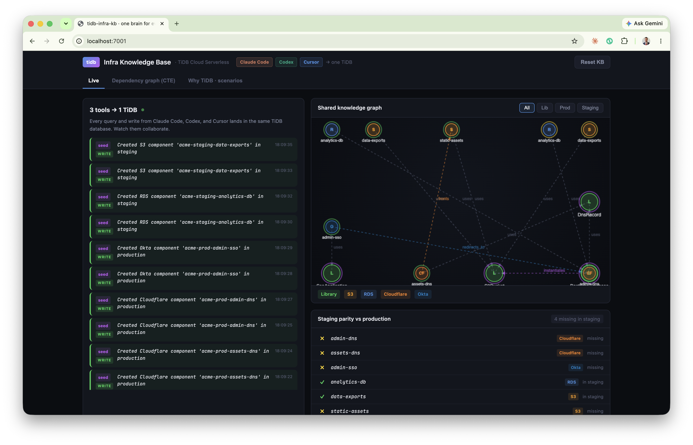
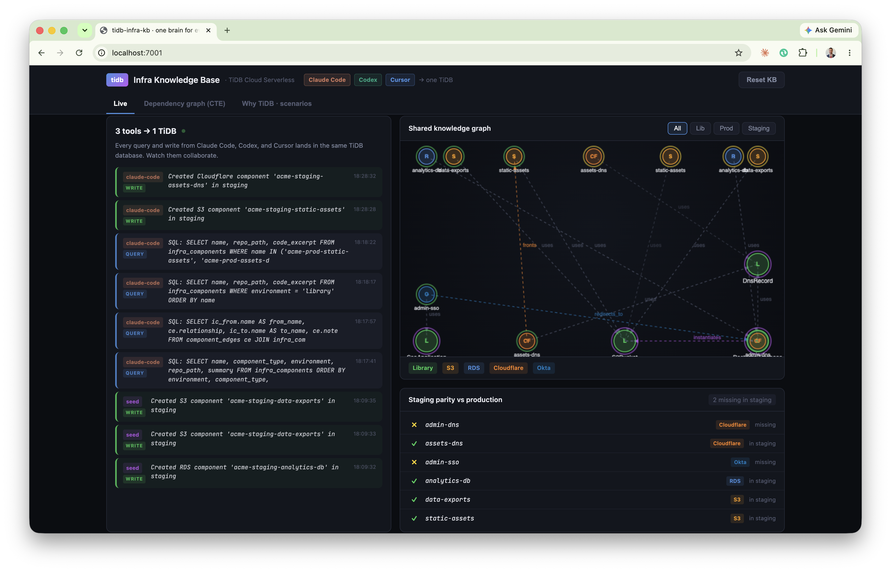
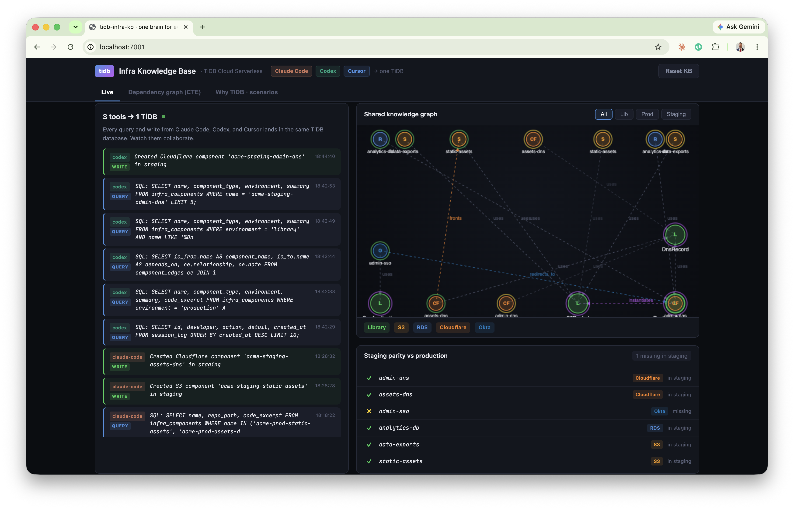

A shared, queryable infrastructure knowledge graph on TiDB that Claude Code, Codex, and Cursor all read and write through MCP - so AI-written infrastructure stops duplicating work, breaking conventions, and starting from zero.
Claude CodeCodexCursorModel Context ProtocolRecursive CTE graph
Technical demo reportBacked by a live TiDB Cloud Serverless cluster
What this is
Teams now write infrastructure with AI coding tools. But each tool works blind and alone - it cannot see what already exists, the team's conventions, or how components connect. The result is duplication, drift, broken conventions, and outages.
This demo puts the engineering knowledge where every tool can use it: a knowledge graph in TiDB Cloud Serverless. Every coding tool connects to it over the Model Context Protocol (MCP), queries it before building, writes its work back, and traverses component relationships with recursive SQL. The example workload is an infrastructure-as-code monorepo (Pulumi / TypeScript) for a fictional company, Acme, spanning AWS, Cloudflare, and Okta.
Three real CLIs → two MCP servers → one TiDB database. The dashboard reads the same database live.
Proven on real TiDB - every screenshot below is from an actual run. The graph, the writes from three real CLIs (Claude Code, Codex, Cursor), and the recursive-CTE traversals all ran against a live TiDB Cloud Serverless cluster (v8.5.3) over the MySQL protocol with TLS. The terminal captures are the unedited tool output.
The problem: AI tools with no shared memory
Four failure modes show up the moment more than one agent (or session) touches the same codebase.
Failure mode
What happens without a shared graph
Duplication
A tool can't see a component already exists, so it builds a second one. Drift and double cost follow.
Convention breaks
It writes a raw aws.s3.Bucket instead of the approved library wrapper, skipping required tags and policies.
Invisible blast radius
It changes a shared library and breaks resources two hops away - discovered only in production.
Cold starts
The next tool or session re-derives everything from the filesystem and re-makes the same mistakes.
The common root cause: the knowledge that prevents these - what exists, how it connects, and the rules - lives only in scattered code and people's heads. It is not queryable, and it is not shared across tools.
The fix. Model the codebase as a graph in TiDB: infra_components (nodes), component_edges (typed relationships), and session_log (who did what). Expose it to every tool over MCP. Now the tools query before they build and hand off warm.
The live demo: three tools, one task
The task: production is complete, but staging is missing its DNS and SSO layer. Watch three different AI coding tools finish it - each picking up where the last left off, because they share one TiDB brain.

Starting state. Left: the live activity feed (one row per query/write from any tool). Right: the knowledge graph and the staging-parity strip - four components are missing in staging (red ✗).
Step 1 - Claude Code inspects, then builds the asset layer claude-code
It first queries the graph (it does not assume), then scaffolds the missing static-assets bucket and its Cloudflare DNS record by composing the existing S3Bucket and DnsRecord libraries - never raw cloud resources - and writes each one back.
Real Claude Code output. It recorded both components (IDs 25 & 26) and reports the rules it followed: no raw aws.*, proxied: true library-enforced, all four required tags, acme-<env>-<name> naming, and KB writeback with dependency edges.

The dashboard after Claude Code: claude-code QUERY rows (it checked first) then two WRITE rows; the staging gap drops from 4 to 2.
Step 2 - Codex picks up warm codex
Codex opens with zero local memory of Claude Code's work. It reads the shared session_log, sees exactly what was just created, and continues with the admin-portal DNS record. No copy-pasting context between tools.
Real Codex output: "The previous session most recently created acme-staging-assets-dns" - it read the shared log, then wrote acme-staging-admin-dns (id=27). A different tool, continuing seamlessly.

The dashboard now shows codex rows above the claude-code rows - two tools, one feed, one database. Gap down to 1.
Step 3 - Cursor verifies with a recursive CTE, then finishes cursor
Before writing the SSO application, Cursor runs a recursive query over the graph to confirm the dependency pattern (an SSO app must redirect to a DNS record), then scaffolds it correctly. Staging reaches parity.
Real Cursor output - the headline moment. It ran a recursive CTE returning the transitive closure SsoApplication → acme-prod-admin-dns → DnsRecord (depth 1 and 2), proving the SSO app must redirect to a DnsRecord before writing a line of code.All three tools' activity in one feed (cursor, codex, claude-code). Cursor's write completes the set - staging now matches production, built by three tools sharing one memory.
The query a vector database can't answer
The headline capability: graph reachability. "What breaks if I change this component?" requires traversing dependency edges to arbitrary depth. A recursive CTE does it in one query.
Blast radius of the S3Bucket library on the live dashboard, visualised as a depth-coloured subgraph with the exact SQL and result rows beside it. The traversal reaches the RDS databases two hops away - their backup buckets compose S3Bucket - a connection no text search could surface.
-- What breaks if S3Bucket changes? Runs unchanged on SQLite and TiDB.WITH RECURSIVE blast(from_id, to_id, relationship, depth) AS (
SELECT e.from_id, e.to_id, e.relationship, 1
FROM component_edges e JOIN infra_components c ON e.to_id = c.id
WHERE c.name = 'S3Bucket'UNION ALLSELECT e.from_id, e.to_id, e.relationship, b.depth + 1
FROM component_edges e JOIN blast b ON e.to_id = b.from_id
WHERE b.depth < 10
)
SELECT depth, from_id, relationship, to_id FROM blast ORDER BY depth;
Why a vector store can't do this. Vector similarity finds related-looking text. It cannot compute a transitive closure over a dependency graph. This is reachability - exactly what SQL recursion is built for - and TiDB runs it as a distributed query alongside the same tables that hold the components, their tags, and (optionally) their vector embeddings.
Why TiDB is the right brain for agents
In the emerging pattern, the database is the agent's persistent memory, execution-state store, and shared knowledge base. That demands more than a vector index.
One engine, every access pattern
Agents need SQL for structured state, graph traversal for relationships, vector search for semantic memory, and full-text (BM25) for knowledge - all over the same data, with no ETL and no sync lag. TiDB provides all of them in one MySQL-compatible engine. This demo uses SQL + recursive CTEs today; the same infra_components table can carry a VECTOR column for hybrid graph-plus-semantic retrieval with VEC_COSINE_DISTANCE.
ACID for agent state
Each write here is one transaction: component + dependency edge + audit-log entry, all or nothing. TiDB's distributed ACID prevents the partial-write bugs that make multi-agent systems nearly impossible to debug.
Built for agent scale
Serverless, pay-per-request, scales to zero. Millisecond database branching gives each agent or workspace an isolated environment - the pattern behind production fleets running millions of agent databases on TiDB Cloud.
How it compares for this workload
Capability
TiDB Cloud
Vector DB (Pinecone)
Postgres / pgvector
Recursive graph traversal (CTE)
✓
✗
✓ (single node)
SQL + JOINs + ACID
✓
✗
✓
Vector + full-text in one engine
✓
vector only
partial
Horizontal scale / millions of tenants
✓
partial
✗
Proof at scale: a leading agent platform runs 10M+ databases and billions of events/day on TiDB Cloud, with 100% of those databases created by agents.
Concrete scenarios the graph prevents
Two everyday infrastructure mistakes, and how a queryable graph stops them before code is written.
In-product scenario cards. Each contrasts the failure without the graph against the corrected path with TiDB, and shows the exact query that answers it.
The duplicate-bucket guardrail, caught live
Asked to add a backup bucket for the staging database, a coding tool queried the graph first - and stopped itself:
Real tool output: it found PostgresDatabase --instantiates--> S3Bucket in the graph and concluded "Don't add a manual backup bucket - you'd end up with a duplicate, and the library's lifecycle rules/tags on the auto-created one would conflict with yours." The duplicate was never written.
The duplicate backup bucket. Asked to "add backups" for a database, a tool greps, finds nothing, and creates a raw duplicate. The graph shows PostgresDatabase already instantiates a backup bucket - so the right action is to write nothing.
Blast radius before a refactor. Before changing the S3Bucket library, one recursive query returns the full set of dependents across every environment - including the RDS instances two hops away. The change is staged safely instead of breaking production.
How to run it
The repository ships everything: the TiDB-backed knowledge base, both MCP servers, per-tool configs, the dashboard, and a presenter's runbook.
Configure TiDB.cp .env.example .env and paste your TiDB Cloud Serverless credentials (Connect → General).
Set up../setup.sh - installs dependencies, creates the schema and seeds the graph on TiDB, and generates MCP configs for Claude Code, Codex, and Cursor.
Launch the dashboard../demo.sh → open http://localhost:7001 (the screen you narrate).
Open three terminals. In each, run claude, codex, and cursor-agent from the repo. All three load both MCP servers automatically.
Follow the prompts in DEMO.md / PRESENTER.md. As the tools work, the dashboard updates live from TiDB.
The two MCP servers each tool connects to
Server
Origin
What it provides
tidb
PingCAP official
db_query / db_execute - raw SQL, recursive CTEs, vector search
Repository:github.com/stephenlthorn/mem9-ai-coding · Apache-2.0. The dashboard falls back to local SQLite if no TiDB credentials are present, so the demo runs even with no network.